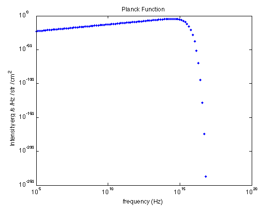
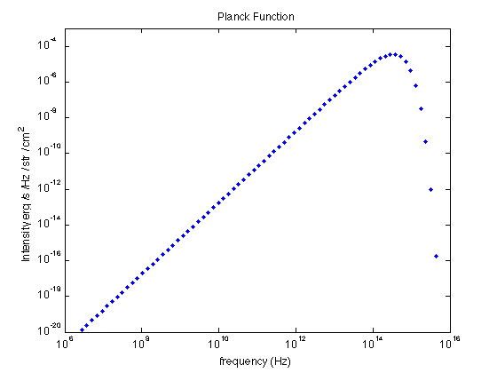
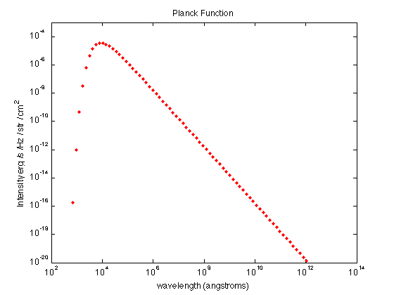
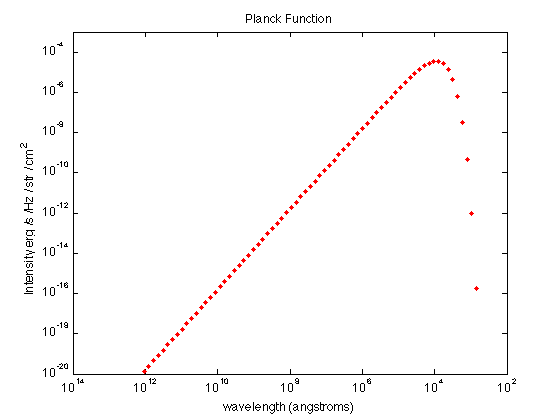
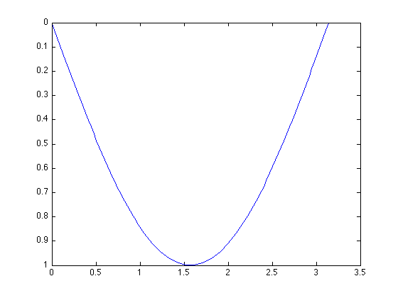
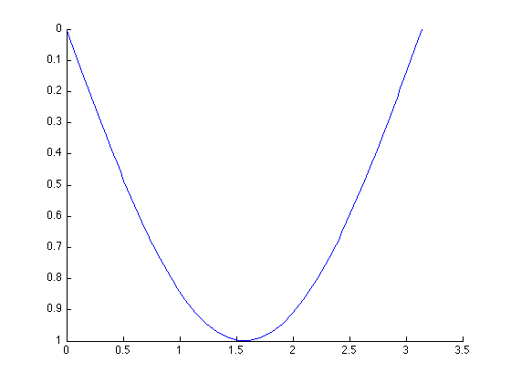

Set Graphic Object Properties
Contents
Set axis limits
Sometimes we would like to focus on part of our plots to investigate the structure. You can use xlim and ylim to set which part of the parameter space you want to plot.
For example, the previous version of the Planck function:
loglog(Nu, Intensity, 'b.') xlabel('frequency (Hz)'); ylabel('Intensity erg /s /Hz / str / cm^2') title('Planck Function')
If we want to focus on the part with maximum intensity:
ylim([1e-20 1e-3])
The syntax of xlim is similar: xlim([min max]).
Changing axis direction
Another way to present the Planck function is to plot it as a function of wavelength:
c = 2.998e10; wavelength = c./Nu / 1e-8; figure(2); clf loglog(wavelength, Intensity,'r.') ylim([1e-20 1e-3]) xlabel('wavelength (angstroms)'); ylabel('Intensity erg /s /Hz / str / cm^2') title('Planck Function')
The tricky part is that, since wavelength = speed of light / frequency, we must reverse the x-coordinate to make the Planck function looks the same:
set(gca,'XDir','rev')
This command applies to YDir, too.
Note that, there are two ways to change the axis direction: set(gca, ...) and set(axes, ...). When using set(gca, ...) we are modifying the current figure we just drew, so always use set(gca, ...) AFTER you use plot(...):
figure(3); clf; plot(linspace(0,pi), sin(linspace(0,pi))); set(gca,'YDir','rev');
However, when using set(axes, ...) we are setting up the graphic environment for the new figure we are going to draw, and it must be called BEFORE the plot command. Also, you'll need to call hold so your plot command won't clean up your set(axes, ...) settings:
figure(3); clf; set(axes,'YDir','rev'); hold on; plot(linspace(0,pi), sin(linspace(0,pi)));
In this lab, since we are using log-log plot, it's more complicated to use set(axes, ...) than using set(gca, ...), because you'll need to include the log-scale setting in your set(axes, ...) command:
set(axes, 'XScale', 'log', 'YScale', 'log', 'XDir', 'rev')
Therefore, though set(axes, ...) provides more degrees of freedom to set up the axis system, we recommend you to use set(gca, ...) in all labs.